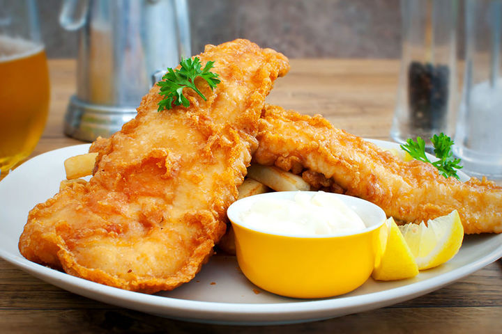

Fish and Chips

Fish and chips is a hot dish consisting of fried fish in batter, served with chips.
The dish originated in England, where these two components had been introduced from
separate immigrant cultures; it is not known who combined them
Often considered Britain's national dish, fish and chips is a common takeaway food in
numerous other countries, particularly English-speaking and Commonwealth nations.
Ingredients
- 2 quarts vegetable oil for frying
- 8 (4 ounce) fillets cod
- salt and pepper to taste
- 1 cup all-purpose flour
- 2 tablespoons garlic powder
- 2 tablespoons paprika
- 2 teaspoons salt
- 2 teaspoons ground black pepper
- 1 egg, beaten
- 1 (12 fluid ounce) can or bottle beer, or as needed
Steps
- Heat oil in a deep fryer to 365 degrees F (185 degrees C). Rinse cod fillets, pat dry, and season with salt and pepper.
- Mix flour, garlic powder, paprika, salt, and pepper in a large bowl; add egg and stir well to combine. Gradually mix in enough beer to make a thin batter.
- Dip cod fillets into the batter to coat. Carefully lower fillets, one at a time, into the hot oil. Fry several fillets at a time, turning once, until cooked through and golden brown, about 2 minutes per side. Drain on paper towels. Repeat to cook remaining fillets. Serve warm.